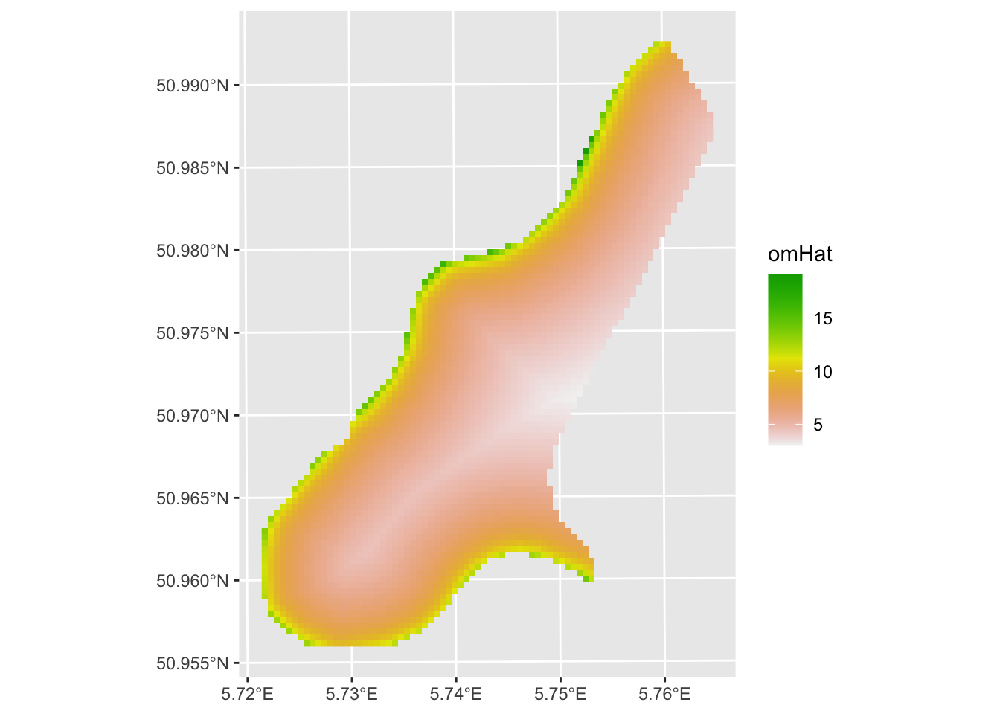
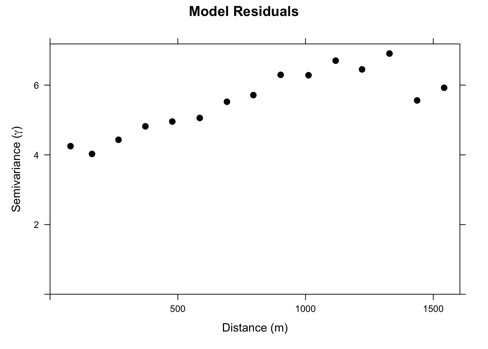
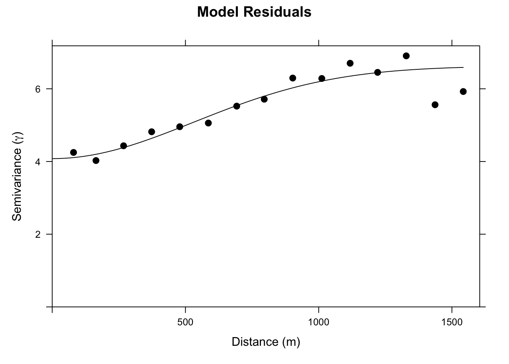
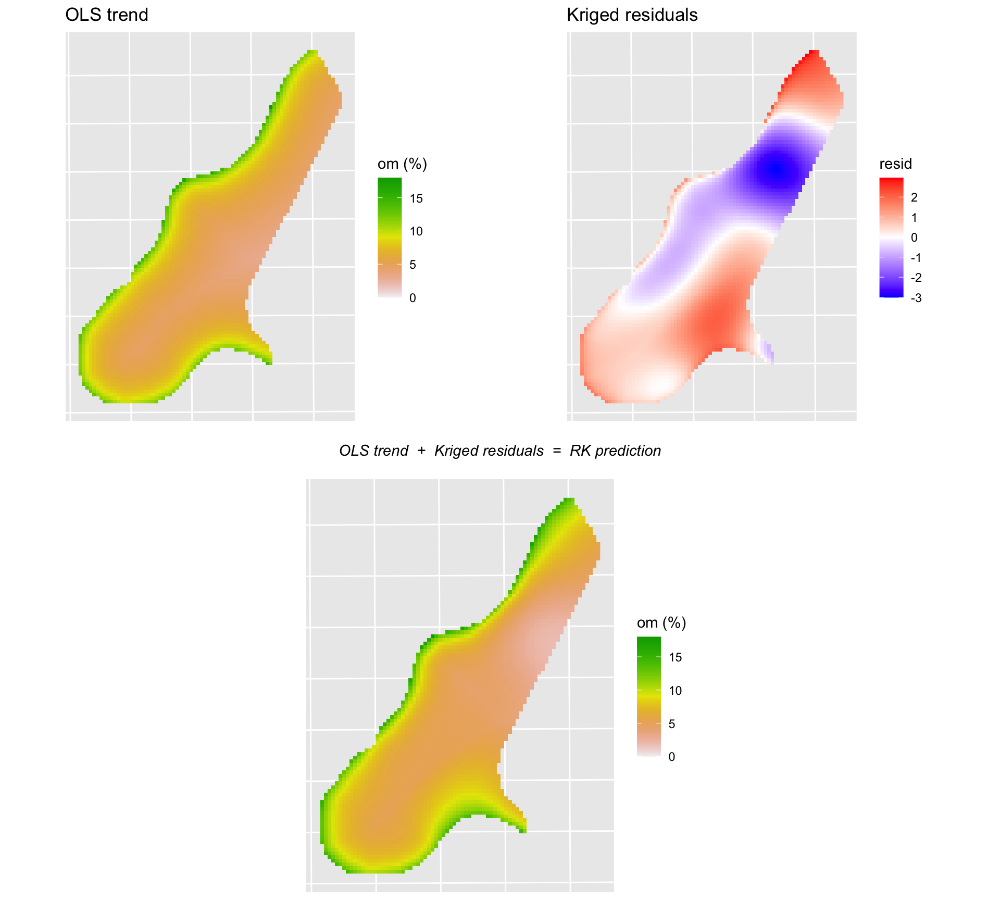
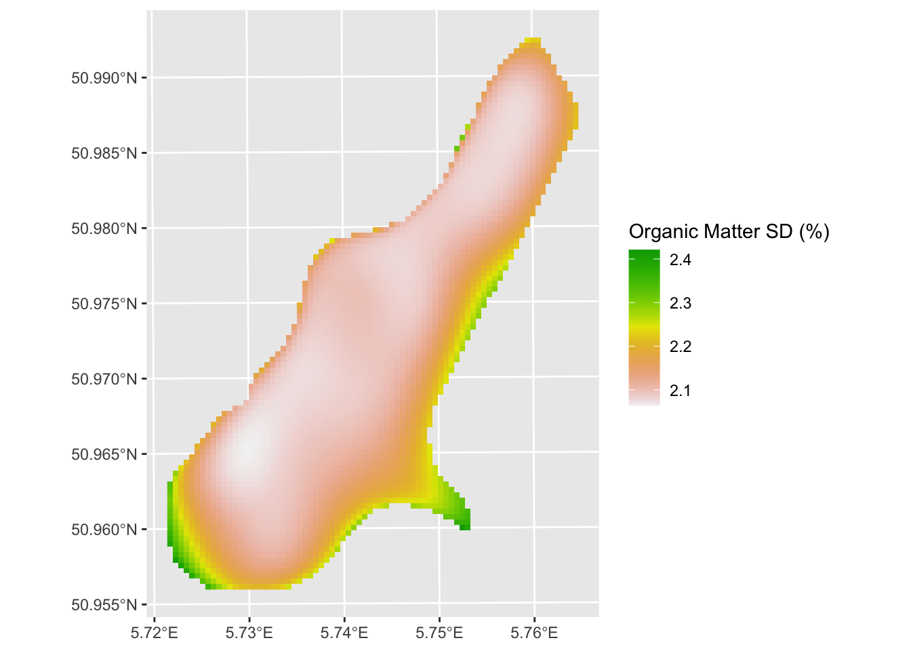

Code
library(tidyverse)
library(sf)
library(terra)
library(tidyterra)
library(gstat)
library(cowplot)Plain kriging uses the spatial structure of the response variable itself to make predictions. That works well, but it ignores something we often have access to: variables that are cheap to measure everywhere and that correlate with the thing we care about. Distance to a river, elevation, soil type, and land cover can all be derived from GIS or remote sensing data across an entire study area, even when your expensive response variable is only measured at a handful of sample points. Regression kriging (RK) combines a regression model using those covariates with kriging of the regression residuals, giving you better predictions than either approach alone.
The gstat(Pebesma and Graeler 2026) package is your friend. But we will need some of our recent collaborators as well including terra(Hijmans 2026) and tidyterra(Hernangómez 2023), plus sf(Pebesma 2026) and tidyverse(Wickham 2023) for the usual data wrangling. We’ll use cowplot(Wilke 2025) to arrange plots at the end.
library(tidyverse)
library(sf)
library(terra)
library(tidyterra)
library(gstat)
library(cowplot)The basic idea is a two-step process. First, fit an OLS regression of your response variable on whatever covariates you have available at both your sample locations and your prediction grid. Second, take the residuals from that regression, fit a variogram to them, and krige those residuals across the prediction grid. The final RK prediction at any location is the OLS fitted value plus the kriged residual:
\[\hat{Z}_{RK}(s_0) = \hat{Z}_{OLS}(s_0) + \hat{\varepsilon}(s_0)\]
The OLS surface captures the broad, covariate-driven trend: organic matter is higher near the river and falls off with distance. In geostatistics, this large-scale spatially varying mean is called the trend, not a trend over time but a systematic variation across space driven by covariates. The kriged residual surface captures the local spatial deviations from that trend, the pockets where organic matter is a bit higher or lower than the covariates alone would predict, based on what we observe at nearby sample points. Adding them together gives a prediction that is informed by both the large-scale drivers and the local spatial structure.
The residuals from the OLS model represent the spatial variation that the covariates couldn’t explain. If those residuals are spatially autocorrelated (and they often are), kriging can extract useful information from their spatial structure. In a standard OLS setting, autocorrelated residuals are a problem because they violate the independence assumption. In RK, they’re an opportunity.
RK is used more and more commonly now that cheap and powerful covariates can be derived from remote sensing and GIS data. Elevation grids, land cover maps, distance-to-feature layers: if it predicts your response and you have it everywhere, it can go in the model.
If you want a refresher on how to fit an OLS model and then apply it to new data with predict, see the Predicting New Data aside. That pattern is the foundation of the RK workflow.
Let’s look at a real-world example of RK using, you guessed it, the Meuse River data. I’m pretty sick of these data but they are familiar to us. We’ve spent several chapters working with meuse2 (the point measurements) and meuse.grid2 (the prediction grid). Now we’re going to use meuse.grid2 for something beyond just holding target coordinates - we’re going to pull covariates from it directly onto our point data. That’s what makes RK possible here.
meuse2 has coordinates and metal concentrations. meuse.grid2 has terrain variables, land cover, and river distance at every grid cell. To build a regression model for organic matter at the sample points, we need river_dist_m at the point locations. st_join() with st_nearest_feature handles that - it matches each sample point to its nearest grid cell and pulls the column across.
meuse2 <- readRDS("data/meuse2.Rds")
meuse.grid2 <- readRDS("data/meuse.grid2.Rds")meuse2 has 164 point measurements and meuse.grid2 has 3089 grid cells. See the appendix for full variable descriptions.
We’ll model om, percent organic matter, as a function of distance to the river. Distance to the river has a correlation of about -0.58 with organic matter - the strongest of any variable in meuse.grid2. Other candidates (elevation, slope, TWI, soil type, flooding frequency) either don’t add much once distance is in the model or are largely redundant with it. Simple and defensible. We’ll first do this naively with OLS alone, then add the kriging step to get RK.
sf and extract covariatesMake both objects into sf, then use st_join() with st_nearest_feature to pull river_dist_m from the nearest grid cell onto each sample point.
meusePoints_sf <- st_as_sf(meuse2, coords = c("x","y"), crs=28992)
meuseGrid_sf <- st_as_sf(meuse.grid2, coords = c("x","y"), crs=28992)
covars_sf <- meuseGrid_sf %>% select(river_dist_m)
meusePoints_sf <- st_join(meusePoints_sf, covars_sf, join = st_nearest_feature)Distance to the river is right-skewed - a handful of points are far from the channel and most are close. Log-transforming it spreads out the short-distance end of the scale where most of the variation in organic matter happens.
meusePoints_sf <- meusePoints_sf %>%
mutate(log_dist = log(river_dist_m)) %>%
drop_na(om)
meuseGrid_sf <- meuseGrid_sf %>%
mutate(log_dist = log(river_dist_m))A simple OLS model: \(om = \beta_0 + \beta_1 \log(\text{river\_dist}) + \varepsilon\).
om_lm <- lm(om ~ log_dist, data = meusePoints_sf)
summary(om_lm)
Call:
lm(formula = om ~ log_dist, data = meusePoints_sf)
Residuals:
Min 1Q Median 3Q Max
-6.7447 -1.3817 0.4084 1.2586 7.5132
Coefficients:
Estimate Std. Error t value Pr(>|t|)
(Intercept) 23.3009 1.2590 18.51 <2e-16 ***
log_dist -2.8793 0.2238 -12.86 <2e-16 ***
---
Signif. codes: 0 '***' 0.001 '**' 0.01 '*' 0.05 '.' 0.1 ' ' 1
Residual standard error: 2.419 on 160 degrees of freedom
Multiple R-squared: 0.5084, Adjusted R-squared: 0.5053
F-statistic: 165.5 on 1 and 160 DF, p-value: < 2.2e-16Distance to the river explains about half the variance in organic matter. Now, after you learn about the pitfalls of using OLS with spatial data you’ll be appalled that I’m running this model without checking for autocorrelation in the residuals. But suppress your horror for now, because all we want to do here is show what a purely regression-based prediction surface looks like before we improve on it.
meuseGrid_sf$omHat <- predict(om_lm, newdata=meuseGrid_sf)
# same sf_2_rast function from the IDW notes -- write it once, use it everywhere
sf_2_rast <- function(sfObject, variable2get = 1){
tmp <- sfObject[,variable2get] %>% st_drop_geometry()
dfObject <- data.frame(st_coordinates(sfObject), z=tmp)
rastObject <- rast(dfObject, crs=crs(sfObject))
return(rastObject)
}
meuseGrid_rast <- sf_2_rast(meuseGrid_sf, variable2get = "omHat")
ggplot() + geom_spatraster(data = meuseGrid_rast,
mapping = aes(fill=omHat)) +
scale_fill_terrain_c() +
labs(fill = "omHat")
The prediction is reasonable, but the residuals are spatially autocorrelated: Moran’s I on a four-neighbor object is 0.26, significantly greater than zero. That matters, and we’ll come back to it in the GLS module.
The OLS model used distance to the river but ignored everything we know about the spatial structure of organic matter. We threw out the variogram. And we know from the Moran’s I above that the residuals are not spatially independent, meaning there is structure left over that distance alone didn’t capture. That leftover structure is exactly what kriging is designed to exploit.
Let’s look at the variogram of om before conditioning on anything
omVar <- variogram(om ~ 1, meusePoints_sf)
plot(omVar, pch=20, cex=1.5, col="black",
ylab=expression("Semivariance ("*gamma*")"),
xlab="Distance (m)", main = "% Soil Organic Matter")
Now we set up a gstat object that includes the regression formula. When we call variogram on this object, we get the variogram of the OLS residuals, not of om itself. The residuals here are just the familiar \(e_i = om_i - \hat{om}_i\) at each sample point: how much higher or lower is the observed organic matter than what log distance alone would predict? We’re asking whether those leftover deviations have spatial structure, or whether they’re just noise. Compare the two variogram plots and you’ll notice the residual variogram has less total variance, which is the variance the covariates explained away. What remains still has spatial structure, which means kriging has something to work with.
omGstat <- gstat(id = "omModel", formula = om ~ log_dist,
data = meusePoints_sf)
omGstat_obsVariogram <- variogram(omGstat)
plot(omGstat_obsVariogram, pch=20, cex=1.5, col="black",
ylab=expression("Semivariance ("*gamma*")"),
xlab="Distance (m)", main = "Model Residuals")
The residual variogram isn’t dramatic, but the semivariance rises from a nugget of around four to a sill of around six. There is spatial structure in the residuals that we can use.
We fit a theoretical model to it. I’ll use a Gaussian model here, though an exponential would also be defensible.
omGau_variogramModel <- vgm(psill = 2, model = "Gau", range = 500, nugget = 4)
omGau_fittedVariogram <- fit.variogram(object = omGstat_obsVariogram,
model = omGau_variogramModel)
plot(omGstat_obsVariogram, omGau_fittedVariogram, pch=20, cex=1.5, col="black",
ylab=expression("Semivariance ("*gamma*")"),
xlab="Distance (m)", main = "Model Residuals")
Now we update the gstat object with the fitted variogram model and predict across the grid. Under the hood, predict is doing three things at every grid cell. First, it evaluates the OLS model by plugging log_dist into \(\hat{\beta}_0 + \hat{\beta}_1 x_1\) to get the covariate-driven trend at that location. Second, it kriges the residuals: it looks at the OLS residuals at the nearby sample points (\(e_i = om_i - \hat{om}_i\)) and uses the fitted variogram to estimate what the residual would be at the prediction location. Third, it adds the two together. The first part handles the large-scale gradient in organic matter driven by distance to the river. The second part handles the local spatial deviations that distance alone couldn’t predict.
# Update the gstat object with the variogram:
omGstat_w_variogram <- gstat(omGstat, id="omModel", model=omGau_fittedVariogram)
# And predict
omHat_sf <- predict(omGstat_w_variogram, newdata = meuseGrid_sf)[using universal kriging]omHat_sfSimple feature collection with 3089 features and 2 fields
Geometry type: POINT
Dimension: XY
Bounding box: xmin: 178500 ymin: 329660 xmax: 181500 ymax: 333700
Projected CRS: Amersfoort / RD New
First 10 features:
omModel.pred omModel.var geometry
2 15.14506 5.019689 POINT (181140 333700)
3 13.63365 4.955353 POINT (181180 333700)
4 12.57610 4.947903 POINT (181220 333700)
5 14.78556 4.880991 POINT (181100 333660)
6 13.41508 4.822351 POINT (181140 333660)
7 12.43349 4.810453 POINT (181180 333660)
8 11.66354 4.825512 POINT (181220 333660)
9 14.56792 4.777798 POINT (181060 333620)
10 13.18838 4.714492 POINT (181100 333620)
11 12.27600 4.696883 POINT (181140 333620)To make this concrete, let’s look at all three surfaces: the OLS trend, the kriged residuals, and the final RK prediction that combines them. We have omHat from the OLS step already. We can recover the kriged residual surface by subtracting it from the RK prediction.
omHat_rast <- sf_2_rast(omHat_sf, variable2get = "omModel.pred")
# kriged residual surface = RK prediction minus OLS trend
omHat_sf$krigedResid <- omHat_sf$omModel.pred - meuseGrid_sf$omHat
omResid_rast <- sf_2_rast(omHat_sf, variable2get = "krigedResid")
p_ols <- ggplot() +
geom_spatraster(data = meuseGrid_rast, mapping = aes(fill=omHat)) +
scale_fill_terrain_c(limits=c(0,18)) +
labs(title="OLS trend", fill="om (%)") +
theme(axis.text=element_blank(), axis.ticks=element_blank())
p_resid <- ggplot() +
geom_spatraster(data = omResid_rast, mapping = aes(fill=krigedResid)) +
scale_fill_gradient2(low="blue", mid="white", high="red",
midpoint=0, na.value="transparent") +
labs(title="Kriged residuals", fill="resid") +
theme(axis.text=element_blank(), axis.ticks=element_blank())
p_rk <- ggplot() +
geom_spatraster(data = omHat_rast, mapping = aes(fill=omModel.pred)) +
scale_fill_terrain_c(limits=c(0,18)) +
labs(fill="om (%)") +
theme(axis.text=element_blank(), axis.ticks=element_blank())
eq <- ggdraw() + draw_label("OLS trend + Kriged residuals = RK prediction",
fontface="italic", size=11)
top_row <- plot_grid(p_ols, p_resid, ncol=2)
plot_grid(top_row, eq, p_rk, nrow=3, rel_heights=c(1, 0.1, 1))
The OLS surface is smooth: it varies only with log distance to the river. The kriged residual surface shows local corrections, positive where nearby samples were higher than the OLS predicted and negative where they were lower. The RK surface is the sum, which has the broad shape of the OLS prediction but with local detail added by the kriged residuals.
And the variance surface around the RK predictions:
omHatVar_rast <- sf_2_rast(omHat_sf, variable2get = "omModel.var")
omHatVar_rast <- omHatVar_rast %>% mutate(omModel.var.sqrt = sqrt(omModel.var))
ggplot() + geom_spatraster(data = omHatVar_rast,
mapping = aes(fill=omModel.var.sqrt)) +
scale_fill_terrain_c() +
labs(fill = "Organic Matter SD (%)")
Compare the RK prediction surface to the OLS surface above. The overall gradient driven by distance to the river is still there, because that came from the regression, but the spatial detail is richer because the kriged residuals filled in structure that distance alone missed. Whether the added complexity translates to better predictive skill is a question for cross-validation.
Regression kriging combines two things you already know: a regression model that uses covariates to explain the broad spatial trend, and kriging on the residuals to capture the local structure the regression missed. The result is a prediction surface with more spatial detail than OLS alone and an uncertainty estimate that kriging brings along for free.
The method is only as good as your covariates. If distance to the river explains most of the variation in organic matter, RK will do well. If your regression is weak, the residual surface carries most of the weight and you’re basically back to ordinary kriging. Either way, the variance surface tells you where the predictions are most uncertain and that is information OLS will never give you.
The next two chapters take a step back. Instead of predicting a surface, we return to regression and ask what happens when OLS residuals are spatially autocorrelated. Spoiler: the coefficients are fine but the standard errors aren’t, and that matters for inference.
Use gstat.cv to cross-validate both the OLS-only model (omGstat) and the full RK model (omGstat_w_variogram). Compute RMSE and R\(^2\) for each. Did RK improve predictions over plain OLS? How much, and where do you think the improvement (or lack of it) came from?
This was a simple model using om ~ log_dist. What else in meuse.grid2 might be worth adding?
Meng et al. (2013) give a readable description of regression kriging and compare it to ordinary kriging and cokriging. Worth a read once you’ve worked through the examples here and want to see how the method performs in practice across different datasets.